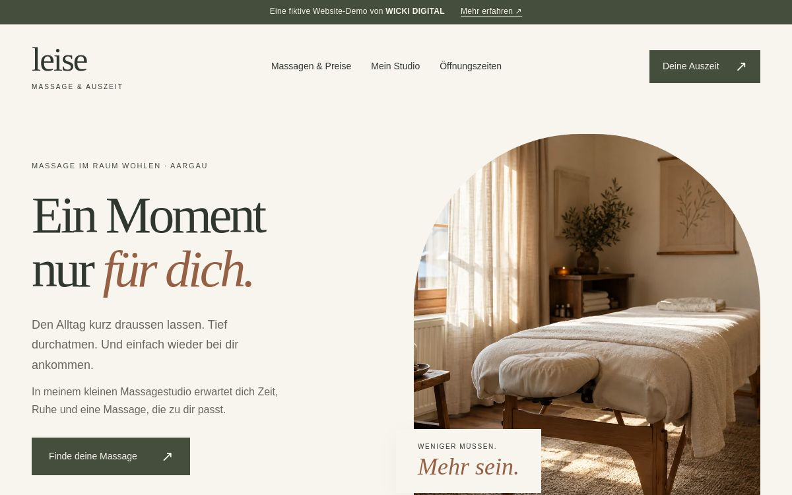
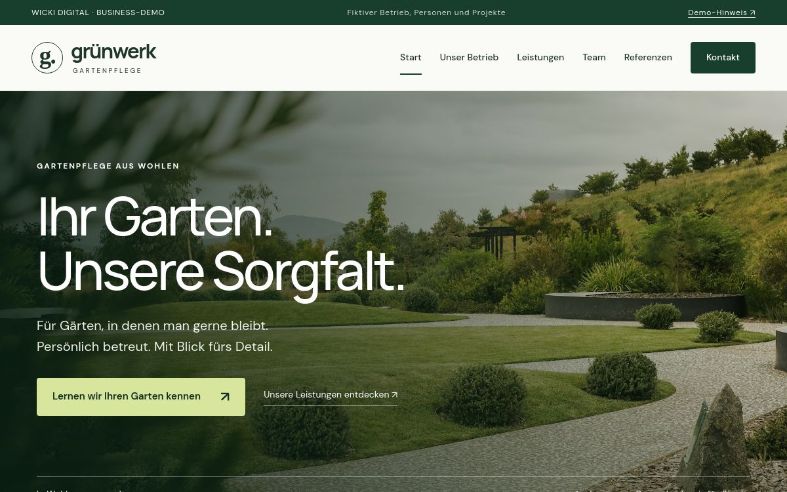

Realer Kundenauftrag · Coaching
You in Balance – Tatjana Geiter
Eine persönliche Website für Tatjana Geiter, die ihre Coaching-Angebote übersichtlich vorstellt und eine unkomplizierte Kontaktaufnahme ermöglicht.
Live-Website ansehenReferenzen & Beispiele
Ein realer Kundenauftrag, ein Eigenprojekt und zwei fiktive Demos: Entdecke die Gestaltung und Hintergründe der einzelnen Websites.
Realer Kundenauftrag · Coaching
Eine persönliche Website für Tatjana Geiter, die ihre Coaching-Angebote übersichtlich vorstellt und eine unkomplizierte Kontaktaufnahme ermöglicht.
Live-Website ansehen
Eigenprojekt · Sportcoaching
Ein sportlicher Auftritt für persönliches Coaching rund um Training und Ernährung.
Live-Website ansehen
Fiktive Demo · Massagestudio
Ein ruhiger One Pager mit Angeboten, Preisen und Einblicken ins Studio.
Website ansehen ↗
Fiktive Demo · Gartenpflege
Ein Auftritt mit mehreren Seiten für Leistungen, Team und Beispielarbeiten.
Website ansehen ↗You in Balance ist ein realer Kundenauftrag. Wicki Sport ist mein Eigenprojekt. leise Massage und grünwerk Gartenpflege sind fiktive Demonstrationsprojekte und zeigen weitere Gestaltungsmöglichkeiten. Einzelne Beispiele enthalten mehr Inhalte oder Seiten als die Einstiegspakete. Den konkreten Leistungsumfang findest du bei den Website-Paketdetails.